24/09/2026 · Revisão local · Português brasileiro / Inglês americano
Pronto para a revisão do proprietário
As dez páginas passaram nas verificações de layout em 390, 768 e 1024 px. A inspeção visual cobriu as páginas completas nos dois idiomas. Não foram encontrados impedimentos na amostra revisada.
Correção aplicada: os nomes acessíveis das opções de idioma passaram a usar o idioma declarado em cada link: “Português (Brasil)” e “English (United States)”. O atributo aria-current identifica a opção ativa.
Percurso verificado
- Entrada e seleção de idioma — adequado. Controle visível, alternativa da mesma página e conservação de #conteudo ao trocar pelo teclado.
- Leitura dos cases — adequado. Dez páginas com um título principal cada, imagens com alternativas, textos sem transbordamento e galerias carregadas na inspeção visual.
- Navegação e contato — adequado no escopo testado. Ordem de foco e contorno visível em todos os controles das dez páginas. O salto ao conteúdo faz a próxima tabulação ir ao conteúdo principal. Contato conferido visualmente e por foco, sem acionar o destino externo.
Resultados objetivos
| Verificação | Resultado |
|---|---|
| Layout: 10 páginas × 3 larguras | 30 combinações sem rolagem horizontal ou transbordamento de texto detectado |
| Contraste de texto HTML | Mínimo medido: 5,09:1; nenhuma falha nas combinações verificadas |
| Teclado | Ordem de foco esperada e contorno visível em todos os controles das dez páginas |
| Estrutura e nomes | Um h1 por página, nenhum img sem atributo alt e nenhum controle visível sem nome |
| Rotas e traduções | Cinco testes locais passaram; geração das dez páginas atualizada |
Limites da revisão
Verificação feita no navegador integrado, com larguras simuladas. Não constitui certificação de acessibilidade: não houve teste com leitor de tela real, dispositivos físicos, outros navegadores ou zoom do navegador. A medição de contraste cobre texto HTML em fundos CSS, não textos dentro dos screenshots dos produtos, que permanecem originais. A publicação e o fluxo externo do WhatsApp não foram executados.
As capturas de páginas completas foram refeitas após carregar as imagens sob demanda. Os recortes intencionais das composições da home e das imagens longas de Iconatus foram preservados. Capturas dos cases ingleses feitas antes do ajuste de rótulos acessíveis têm a mesma apresentação visual; os rótulos corrigidos foram confirmados no navegador depois da geração.
Capturas e observações
Clique em uma imagem para examiná-la na resolução original.

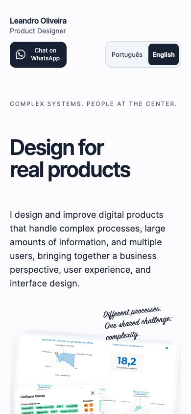
1. Entrada e idioma — celular
Cabeçalho e seletor legíveis em 390 px. A opção ativa tem destaque visual.
Abrir captura completa
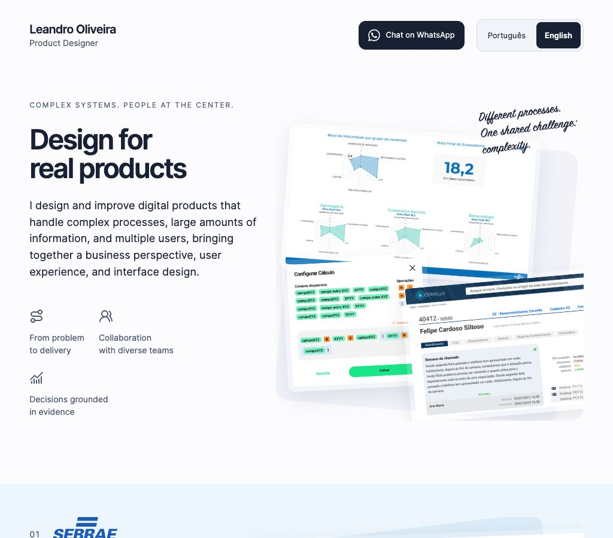
1. Entrada e idioma — desktop compacto
Cabeçalho, apresentação e imagens sem sobreposição com o texto.
Abrir captura completa
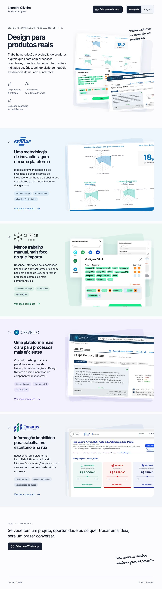
1. Home completa — português
Quatro projetos, legendas e contato mantêm hierarquia e espaçamentos.
Abrir captura completa
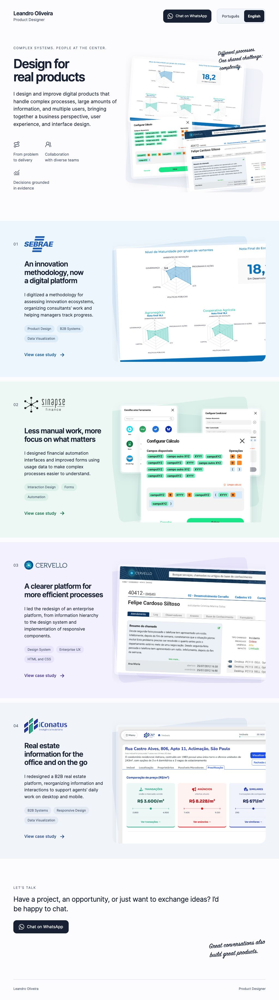
1. Home completa — inglês
As traduções cabem no layout e mantêm os links dos quatro cases.
Abrir captura completa
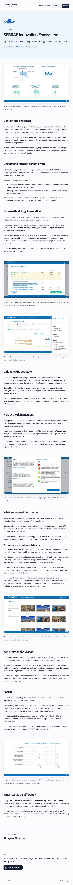
2. SEBRAE — inglês
Seções, figuras, legendas e links de imagem completa conferidos.
Abrir captura completa
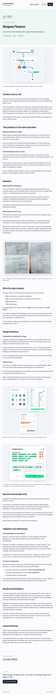
2. Sinapse — inglês
Fluxo, anotações e modais carregaram ao percorrer a página. Galeria se reorganiza em tablet.
Abrir captura completa
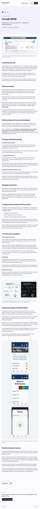
2. Cervello — inglês
Comparação de dashboards e telas mobile preservam proporções; leitura em uma coluna.
Abrir captura completa
2. Iconatus — inglês
Figuras mobile mantêm os recortes existentes e os links para a imagem completa.
Abrir captura completa
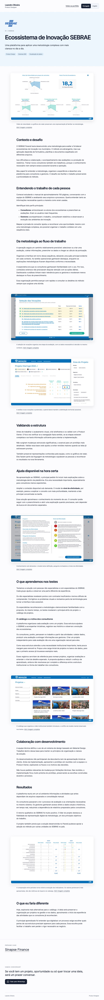
2. SEBRAE — português
Página completa inspecionada, incluindo legendas, navegação e rodapé.
Abrir captura completa
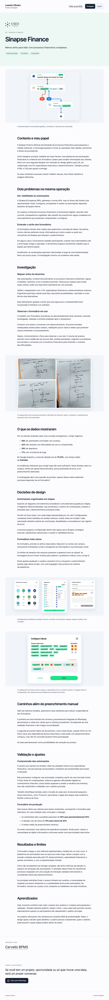
2. Sinapse — português
Galerias, métricas e textos sem cortes ou sobreposições visíveis.
Abrir captura completa
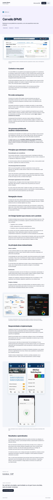
2. Cervello — português
Galerias e narrativa completas conferidas após o carregamento das imagens.
Abrir captura completa
2. Iconatus — português
Conteúdo e acesso às imagens completas preservados.
Abrir captura completa
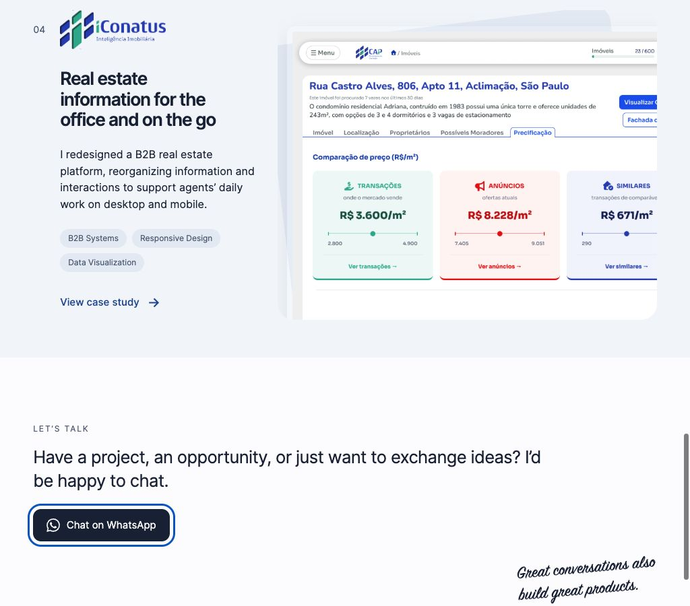
3. Contato e teclado
O botão de contato recebe foco visível. Nenhuma mensagem foi enviada.
Abrir captura completaRegistros de verificação
Layout e estrutura · Contrastes · Ordem de foco (antes da correção dos nomes)
Próxima etapa: revisão visual e editorial do proprietário antes do aceite final.